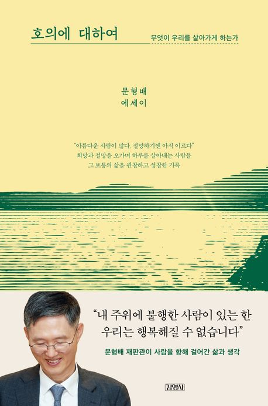

호의에 대하여 - 문형배
2026-03-20

이 책은 법률가의 회고록이라기보다, 무엇이 한 사람을 살아가게 하는가를 따라가는 한 편의 긴 에세이처럼 느껴져서 끝까지 읽게 되었다. 저자는 문형배 전 헌법재판소장 권한대행으로, 2018년 4월 19일 헌법재판관 임기를 시작해 2025년 4월 18일 퇴임했다고 소개된다. 책의 분위기는 제도권 회고록보다는 산책하듯 사유를 이어가는 에세이에 가깝다.
정상에 오르지 않는 등산을 좋아하고, 나무 이름에 해박하며, 부산 시민공원을 걸으며 나무 이름표를 읽는 이야기를 한다. 독만권서 행만리로를 지향하는 독서광이자 산책광으로 자신을 비추고, 일생의 책을 한 권 남기고자 했다고 말한다.
가장 오래 남은 대목 가운데 하나는 '저 사람은 법 없이도 살 사람'이라는 익숙한 말을 뒤집는 부분이다. 보통은 착해서 남에게 피해를 주지 않을 사람이라는 뜻으로 쓰지만, 책은 여기서 정말 중요한 질문을 던진다. 과연 착한 사람에게 법은 필요 없는가?
저자는 오히려 착한 사람일수록 법을 알아야 한다고 말한다. 착한 사람은 법을 잘 모르고, 법을 아는 사람은 꼭 착하지 않은 경우를 자주 본다고 한다. 이런 사건일수록 해결이 어려워지고, 같은 법이 모두에게 적용되어야 하므로 착한 사람만을 따로 보호하는 데는 한계가 있다. 착한 사람에게 적용되는 법과 그렇지 않은 사람에게 적용되는 법이 따로 있을 수는 없기 때문이다.
법의 무지가 면책된다고 단정하기도 어렵고, 그렇다고 책임이 없다고 말할 수도 없다. 그래서 결론은 더 현실적이다. 법이 선의를 위해 따로 조정되지 않기 때문에, 오히려 선한 사람부터 법을 배워야 한다는 것이다. 저자가 이런 글을 계속 쓰는 이유도 그중 하나라고 한다.
책의 정서는 부드럽고 잔잔하다. 저자는 김창완을 좋아했고 지금도 좋아한다고 쓴다. 가사는 평범하고 멜로디는 편안하며, 일상이라는 것이 얼마나 편안한가를 말하는 대목이 오래 남았다. 해가 매일 동쪽에서 떠야 하지, 오늘은 동쪽에서 뜨고 내일은 서쪽에서 뜬다면 불안해서 어떻게 살겠느냐는 말이 그렇다. 아주 평범한 문장이지만, 일상이 얼마나 큰 안정의 기반인지 다시 생각하게 만든다.
인생이란 실수를 몇 번 되풀이하고 후회를 얼마나 더 하고서야 제대로 살 수 있는 것일까, 가족에 대한 책임은 인생의 목표를 어디까지 수정하게 만드는 것일까 같은 질문도 계속 따라온다. 책은 여기에 깔끔한 해답을 주기보다, 그 질문들을 삶 속에 남겨 둔 채로 함께 걸어간다.
책의 정서를 가장 잘 보여주는 문장은 이것이었다. 여전히 세상에는 아름다운 사람들이 많다. 절망하기엔 이르다.
설을 쇠면 마흔여섯이라고 한다. 불혹을 넘어 지천명에 다가가는 나이지만, 스스로를 돌아보면 마흔을 넘겼다고 해서 더 깊어지거나 넓어진 것 같지는 않다고 쓴다. 그저 남을 유혹하지 못하는 불혹이 되었을 뿐이라는 자기 풍자가 있다. 다만 스물일곱에 판사가 되어 여기까지 오면서 적어도 열정만은 뜨겁게 유지했다는 대목은, 한 인생의 집중 포인트가 무엇인지를 다시 생각하게 만든다.
책을 읽는 세 가지 이유를 묻는 질문에 대한 저자의 답도 선명했다. 무지를 극복하기 위해서, 무경험을 극복하기 위해서, 무소신을 극복하기 위해서. 이 세 문장은 읽자마자 내 쪽으로 되돌아왔다.
나 역시 어릴 때부터 책을 참 좋아했다. 수십 권의 동화책을 쌓아두고 읽으며 잠들었고, 초등학교 때는 위인전을 수백 번은 넘게 읽은 것 같다. 중고등학교 때도 공부보다 책읽는 것이 더 즐거웠고, 대학에 가서도 도서관에서 늘 책을 읽었다. 군대에서는 대대장 운전병을 하며 틈날 때마다 책을 읽었다. 전역 후 20대 내내는 독서 모임과 글쓰기 모임 속에서 수십 명, 수백 명 규모의 사람들과 섞여 장도 맡아보았다. 그렇게 2026년에 와서는 박사과정에 진학해 학업을 잇고 있다. 수천 권일지, 만화책과 무협지까지 합치면 수만 권일지 모르겠다. 하지만 양 자체보다 중요한 것은, 그 시간을 통해 나의 세계를 넓히고 타인의 세계를 존중하고 배우며 조금 더 겸손하게 사는 중심을 얻었다는 점일 것이다.
박사과정 동안에도 매주 도서관에 들러 틈나는 대로 책을 읽고, 이곳에 계속 정리하고자 한다. 그와 더불어 페이퍼도 쓰고 싶다. 세상의 문제를 고전적 컴퓨팅과 양자컴퓨팅을 통해 풀어보고, 풀지 못했던 문제들을 조금 더 효율적이고 새로운 관점에서 직관적으로 살펴보고 싶다는 생각도 든다. 그래서 이 노트는 책 요약이면서 동시에 이 책을 읽다가 떠오른 내 생각들을 조금은 나이브하게 펼쳐 놓은 기록이기도 하다.
저자는 이렇게 말한다. 과거의 일이 저절로 역사가 되는 것은 아니다. 현재의 사람들이 기억할 때 그것은 역사가 된다. 이 문장은 책에 반복해서 등장하는 나무의 이미지와도 잘 이어진다. 저자는 나무를 좋아한다고 한다. 내가 잠시 잊고 있을 때도, 다시 찾을 때도 늘 그 자리에 있기 때문이다. 동시에 나무는 늘 변한다. 계절마다 다르고, 해마다 다르다.
이 대목을 읽으며 한 걸음 물러서서 나 자신을 관조해보게 되었다. 이제는 앞으로의 30대를 한 번 정리하고 나아갈 시점이 아닌가 싶다. 지적인 면에서도 인격적인 면에서도. 그리고 내가 소중하게 생각하는 사람들과 함께 어딘가를 찾아간다는 일이 얼마나 소중한지도 다시 느끼게 되었다.
시간을 길게 놓고 보면 자아는 감성의 흐름이 축적된 대시보드처럼 보이기도 한다. 10대 때의 싸이월드 감성이 20대의 나를 만들었고, 20대의 인스타 감성들이 지금의 30대를 만들었고, 지금의 홈페이지가 또 앞으로의 40대를 만들어갈지 모른다. 감성적이고 추상적이던 것들이 시간이 지나며 점점 의지를 가지고 명확화되고, 논리화되고, 개념화되며 무언가를 남기려는 속성으로 바뀌는 듯하다.
무슨 일이든 화에 대한 최고의 대책은 화를 늦추는 것이라는 말도 좋았다. 처음부터 용서하기 위해서가 아니라, 심사숙고하기 위해 화의 유예를 요구하라는 말이다. 분노보다 판단이 먼저 돌아오도록 시간을 벌라는 뜻으로 읽혔다.
첫인상은 매우 중요하고 일주일 이내에 형성된다는 말, 꾸준한 독서가 필요하다는 말, 자신의 방향을 정확히 알아야 한다는 말, 건강에 유의해야 한다는 말, 롤 모델을 찾아야 한다는 말, 시간을 철저히 관리해야 한다는 말도 이어진다. 모두 평범하지만 그래서 더 오래 남는 문장들이다.
공부의 즐거움에 대한 저자의 말도 빛난다. 공부는 삶이고, 공부는 새로움이고, 공부는 즐거움이고, 공부는 깨달음이라고 쓴다. 이 한 문장만으로도 어떤 사람들이 끝까지 읽고 걷고 쓰는지를 조금은 알 것 같았다.
노자의 도가 무엇이고 덕이 무엇인지 명료하게 말하지 않는다는 대목도 나온다. 오히려 도라고 할 수 있는 도는 진정한 도가 아니라고 함으로써 이해를 더 어렵게 만든다. 그런데 그 어려움 자체가 오히려 사유를 깊게 만든다.
책에는 조용한 닻처럼 남는 문장들이 여럿 있다. 인생은 사람들이 생각하는 것만큼 그렇게 좋은 것도, 그렇게 나쁜 것도 아니다. 만족을 얻는 방법에는 두 가지가 있다. 욕망을 줄이는 방법과 욕망을 충족하는 기회를 늘리는 방법. 전자는 안정적이지만 현실에 취약하고, 후자는 강하지만 불안하다. 인생은 어쩌면 그 둘 사이를 헤매는 일인지도 모른다. 그리고 장발장이 코제트와 마리우스에게 한 말. 죽는 것은 아무것도 아니야. 살 수 없는 것이 무서운 일이지.
전체적인 별점으로 줄이면 내게는 5점 만점에 3.5점 정도였다. 기대했던 만큼의 직접적인 내용이나 더 선명한 메시지가 아주 풍부했던 것은 아니었다. 그래도 좋았던 것은, 이 책이 판사라는 직함보다 한 사람으로서의 삶을 엿보게 해주었다는 점이다. 어떻게 걷고, 읽고, 기억하고, 화를 늦추고, 일상 속에서 자신을 다잡는지를 조용히 보여준다는 점이 좋았다.